Vrais tableaux DEM à 240 m/pixel. Même échelle d’altitude par galerie ; écart et pente identifiés par figure. Aucun candidat activé dans le serveur. Les images ne remplacent pas le gate numérique de 1 m.
Température reconstruite et palette biomes
Max 117.372 m ; MAE 5.24608 m.
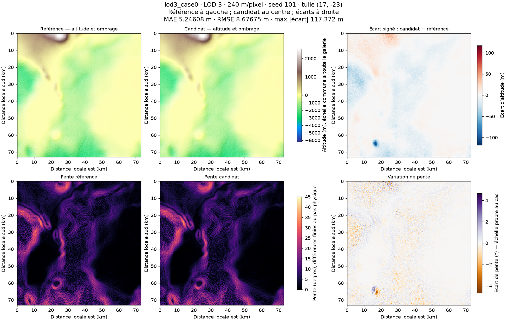
Max 63.5054 m ; MAE 10.0004 m.
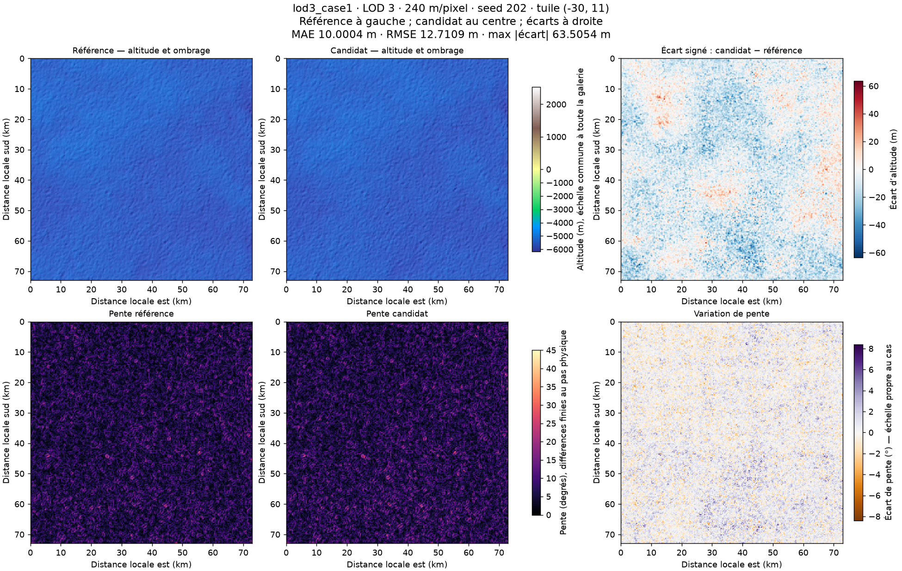
Max 89.1519 m ; MAE 8.29098 m.
Max 86.6284 m ; MAE 12.0675 m.
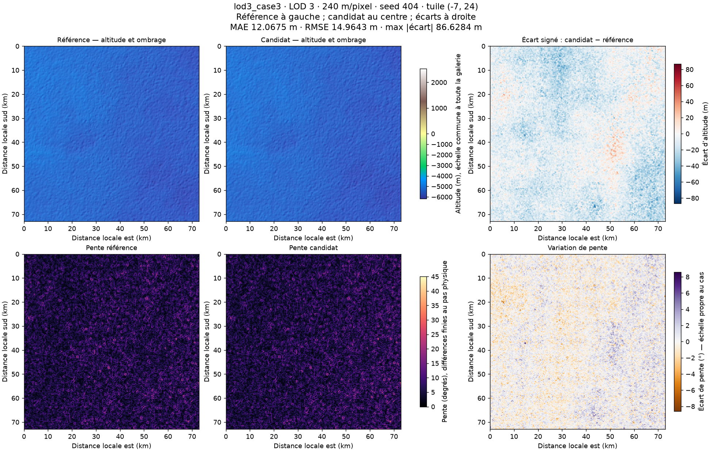
Température reconstruite et palette biomes
Max 223.351 m ; MAE 16.0545 m.
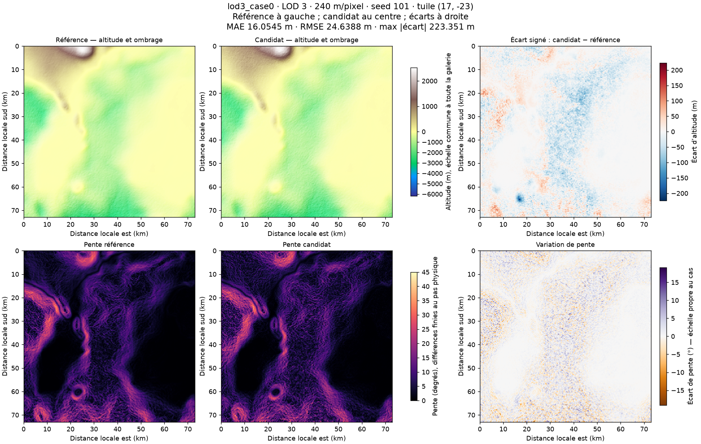
Max 338.302 m ; MAE 87.3517 m.
Max 204.518 m ; MAE 29.0568 m.
Max 300.115 m ; MAE 71.7181 m.
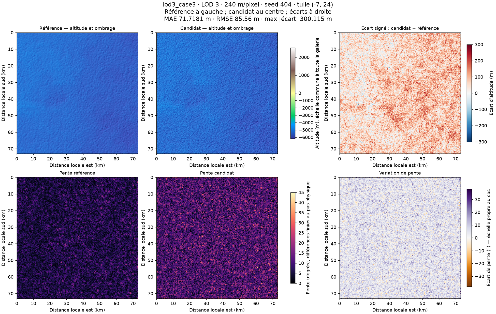
Température reconstruite et palette biomes
Max 141.724 m ; MAE 11.5295 m.
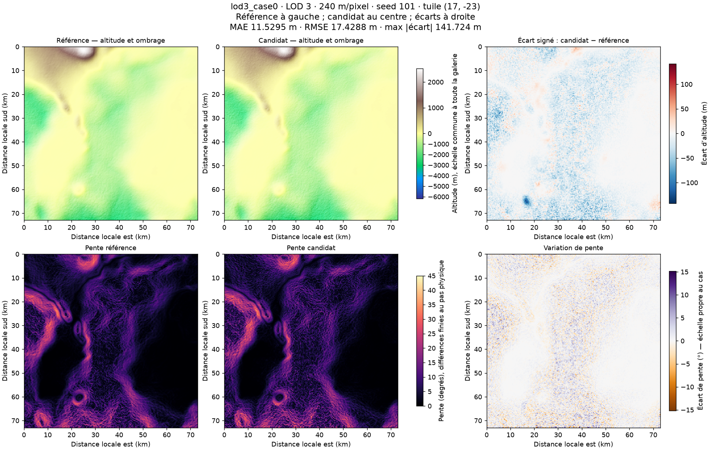
Max 200.697 m ; MAE 35.7336 m.
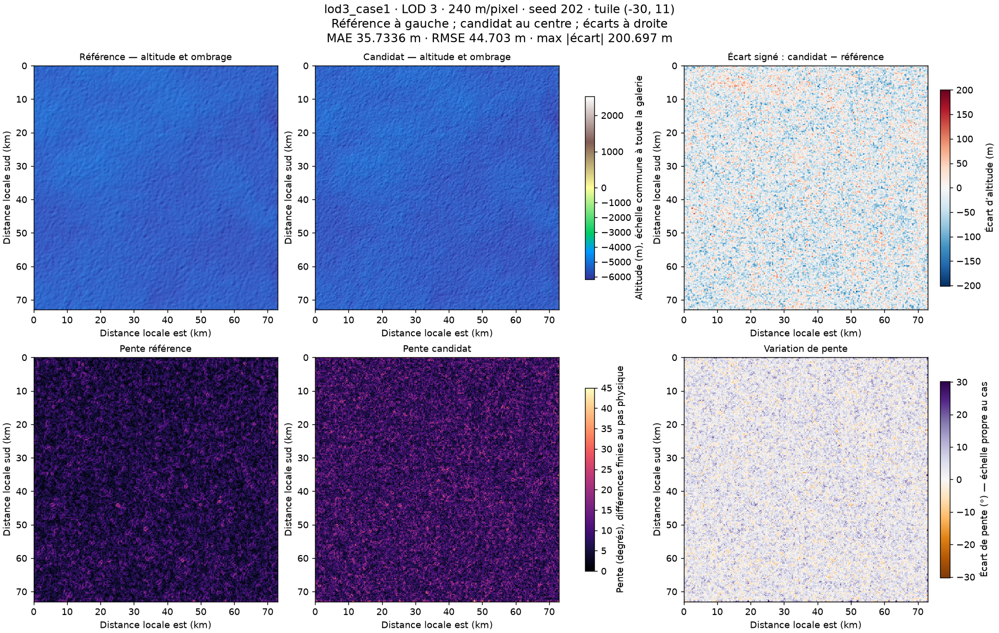
Max 177.455 m ; MAE 26.5654 m.
Max 186.56 m ; MAE 35.5124 m.
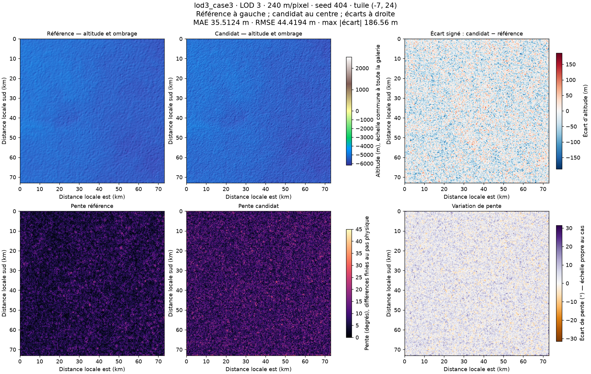
Température reconstruite et palette biomes
Max 217.896 m ; MAE 16.2233 m.
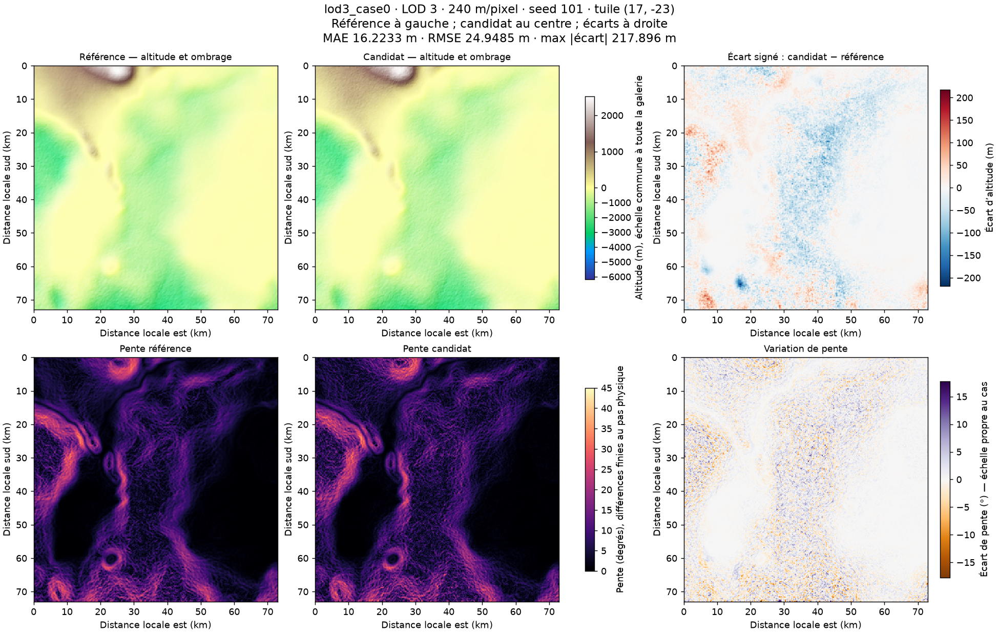
Max 329.629 m ; MAE 87.435 m.
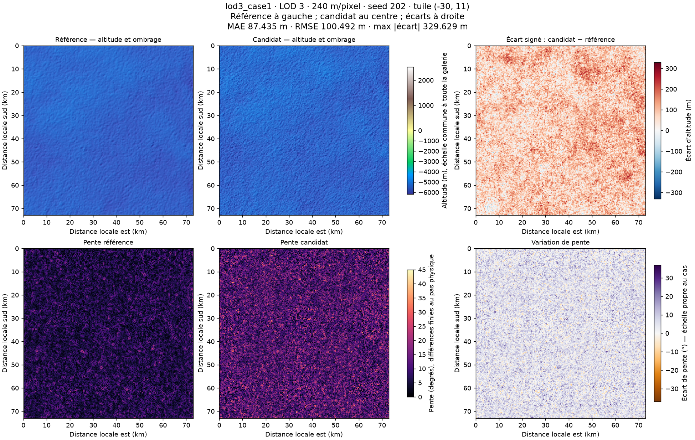
Max 192.45 m ; MAE 29.0639 m.
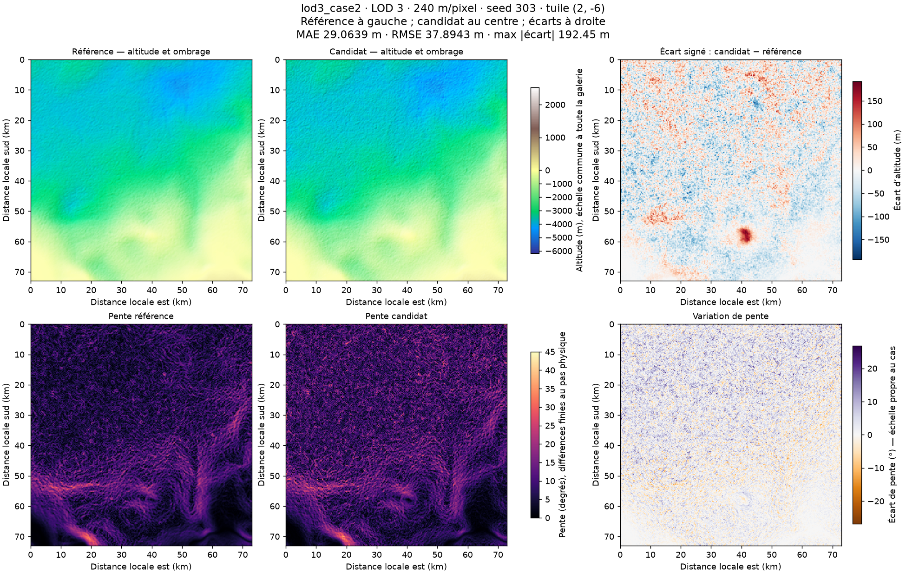
Max 313.191 m ; MAE 72.0823 m.
Température reconstruite et palette biomes
Max 47.1716 m ; MAE 8.71284 m.
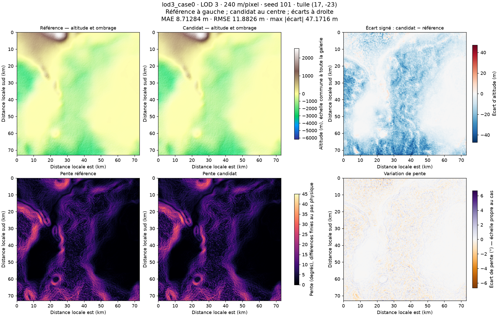
Max 91.5879 m ; MAE 44.9697 m.
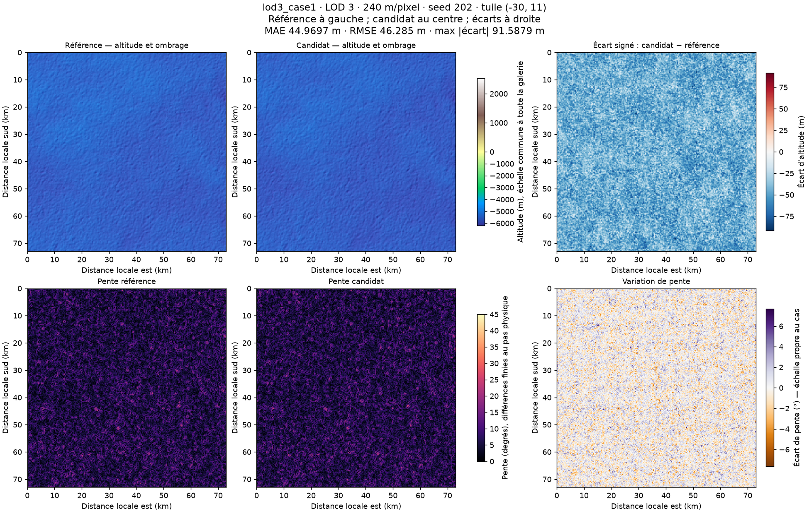
Max 80.9856 m ; MAE 27.5495 m.
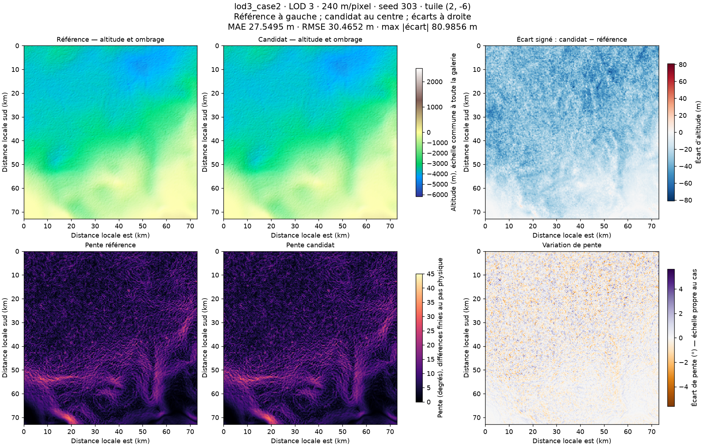
Max 93.5308 m ; MAE 44.398 m.